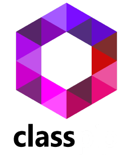

<ion-header>
  <ion-toolbar>
    <ion-title style="color: floralwhite;margin-top: 7%; margin-right: 10%;text-align: center;">Juegos Inactivos</ion-title>
    
    <ion-buttons slot="start" style="color: floralwhite;">
      <ion-menu-button></ion-menu-button>
    </ion-buttons>
  </ion-toolbar>
</ion-header>

<ion-content>
  <ion-list *ngIf="JuegosInactivos[0];else Aviso_no_juegos_activos">
    <!--Si no tiene valor JuegosActivos,
    entonces aparecerá la alerta de Aviso_no_Juegos_Activos-->
        <ion-list class="item-detail-container" *ngFor="let juego of JuegosInactivos">
          <h2 style="text-align: center;">{{juego.Tipo}}</h2>
          <p style="text-align: center;" id="p"> {{juego.Modo}} </p>
        </ion-list>

  </ion-list>
  <ng-template #Aviso_no_juegos_activos style="text-align: center;">
    <label class="AvisoNoJuegosActivo">
      <b>No tienes juegos Inactivos</b></label>
  </ng-template>
</ion-content>
